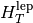

This exercise uses a real analysis as example. It is a search for a resonance Z’ decaying to ttbar in the muon+jets channel. The considered backgrounds are standard-model ttbar production (called ttbar in the histograms), W+jets (wjets), QCD multijet (qcd), Z+jets (zjets), and single-top (singletop). The analysis uses two non-overlapping channels: A QCD-enriched region in the low- region (mu_htlep; is the sum of missing transverse energy and the muon transverse momentum) and the observable sensitive to signal: The invariant ttbar mass in the high- region (mu_mtt), where only little of the difficult-to-model QCD background is left. The signal is called zpXXXX where XXXX is the mass of the Z’ resonance.
Note
Originally, the analysis was done in two steps: first estimating QCD by fitting the background yields in the mu_htlep channel and then use the estimated values in the mu_mtt channel only for the limit setting. Using the two channels simultaneously, however, allows estimating the background yields in the signal region without neglecting a potential signal contamination of the QCD-enriched sideband or correlations between the estimated background yields.
This is an example of a more general pattern: It can often be useful to enlarge the statistical model instead of dividing it in several steps, because in the latter case, it can be difficult to propagate the result of the intermediate steps consistently (e.g. the covariance matrix for the background estimates or the assumption that the sideband was signal-free).
Using root, have a look at the file ex4input.root. It contains the histograms of the analysis just described, where the histograms follow the naming convention channel__process (for the nominal templates) or channel__process__systematics__direction (for the systematics treated by template morphing). Real data is contained in the histogram with process name DATA. Refer to the build_model documentation for details on the naming convention.
The get_model method in ex4.py constructs a statistical model that uses template morphing for all systematics in the root file (which are assumed to be the +-1sigma deviations); theta-auto detects the naming convention automatically. In addition the method adds rate-only systematics via the model.add_lognormal_uncertainty method, which adds a factor exp(lambda*theta) for the templates, as discussed in the lecture.
Comment out the code in ex4.py commented with 4.a. and run it though theta-auto.py. This will create a directory htmlout which contains a summary page (index.html) of the statistical model. Open it in a browser and go through the various sections to see what the rates of the backgrounds (and signals) are in the channels, and what effect the various uncertainties have on the rate in the channels.
Note
The output of model_summary is very useful to judge whether the model building worked as expected, as it allows to answer many questions such as: Have all channels been detected? Is the signal defined correctly? What is the rate impact of the uncertainties? (have all histograms been filled correctly, or are some uncertainties -100% or very asymmetric?) etc.
The model variable in the script contains one common background model and several different signal models (where only the mass of the Z’ differs). For limit setting or p-value calculation, only one of those signal templates is used at a time. To control what is to be considered as the “signal”, theta-auto has the concept of “signal process groups”, refer to the documentation for details. What you need to know now: The default behavior is to use each signal process in turn; to make a background-only fit is done by passing the option signal_process_groups = {'bkgonly': []}.
Comment in the 4.b.i. part in ex4.py to make a maximum likelihood fit for each signal. The parameter corresponding to the signal cross section is called beta_signal which is a parameter >=0 without prior (flat prior) used as a direct factor for the input templates zpXXXX. As the input templates in this case have been scaled to a cross section of 1pb, beta_signal has the meaning of the signal cross section measured in pb.
Calculate the asymptotic Z value by commenting in the code for 4.c.i. This calculates the asymptotic Z-value based on Wilks’ Theorem via the log-likelihood ratio (cf. lecture 1).
To get the expected significance, one can make toys with a non-zero signal cross section (the expected cross section) and calculate the asymptotic Z-value for each toy. The code at 4.c.ii. does that using beta_signal=1 as input (so a cross section of 1pb). What is the expected significance for the various masses?
Note
theta restricts the value cross section value to beta_signal >= 0, as otherwise, negative Poisson means might occur. This leads to problems evaluating the negative log-likelihood function (which would be infinity in this case, which however cannot be dealt with by the minimizer). This restriction leads to Z values being truncated at 0.
Change the code from 4.c.ii. to get the Z value distribution for background-only (change input="toys:0.0"). What do you expect as distribution for Z?
Comment out the code for calculating the asymptotic CLs limits. How do the expected and observed limits compare? Also look at the generated html output (in the htmlout directory) to see the result. Note that the asymptotic limits first make a fit to data and use the asymptotic likelihood properties around the best-fit value. Therefore, the “expected” limit for this method depends on the data (which might be counter-intuitive).
Note
Make sure to have at most one line writing the report; this line should be at the very end.
Also calculate Bayesian limits by commenting out the corresponding second code block. In this case, the expected limit is run by throwing 1000 background-only toys and calculating the limit for each of them. The median and central 68% (95%) define the expected line and the 1sigma (2sigma) bands.
Note
The Bayesian limit calculation involves running the Markov-Chain Monte-Carlo integration algorithms that evaluates the posterior a large number of times. Therefore, the Bayesian limits take a longer time to calculate compared to asymptotic CLs. The example code contains a configuration option that enables multi-threading; each thread calculates a subset of toys.
Question: How large is difference between the expected (observed) limits of the Bayesian and asymptotic CLs methods?
Note
You will notice that the observed limit between Bayesian and CLs agrees very well (typically better than 10%). For the expected limit, however, the difference can be larger. At least in part, this is due to the way the expected limits are calculated for the asymptotic method via bootstrapping and the frequentist re-interpretation, while for the expected Bayesian limits, all nuisance parameters are drawn from their priors, which is completely independent of the data. So this difference shows that the definition of “expected” limit is somewhat arbitrary.